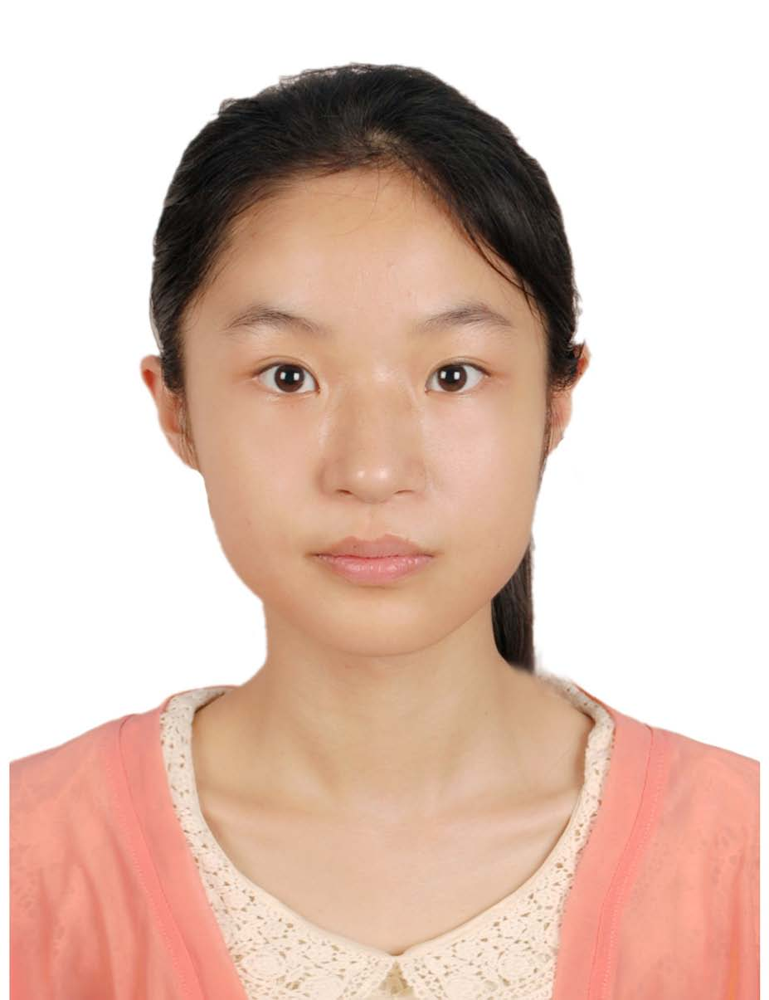

|
Zhan, Xueying (詹雪莹)
|
 |
Postdoctoral Research Associate
Gates Hillman Center 7601
Computational Biology Department, SCS
Carnegie Mellon University
5000 Forbes Avenue
Pittsburgh, PA 15213
E-mail: xueyingz@andrew.cmu.edu
Spare E-mail: sinezhan17@gmail.com
|
About me
I received the B.S. degree from Sun Yat-sen University, school of Data and Computer Science, in 2017. I received my PhD degree at City University of Hong Kong, department of Computer Science. From 2015 to 2017, I conducted research on Crowd-sourcing based on sentiment analysis tasks, supervised by Dr. Yanghui Rao. From 2017 to present, I conduct research on Active Learning, supervised by Prof. Antoni B. Chan and Prof. Qing Li. My main research interests include Machine Learning, Active Learning and Crowd-sourcing. Currently, I'm a Postdoc at CMU supervised by Prof. Min Xu.
Research
My research interests include:
Active Learning, Machine Learning
Crowd-sourcing, Sentiment Analysis
Computational Biology, Biomedical Image Analysis
Education
B.S. Sun Yat-sen University, school of Data and Computer Science, department of Mobile Information Engineering, 2013-2017.
The Third Prize Scholarship (Sep. 2014), 30% of department. The First Prize Scholarship (Sep. 2015), 5% of department. The Second Prize Scholarship (Sep. 2016), 10% of the department.
The Zhuhai Coca-Cola Scholarship for Outstanding Students (5/446).
Excellent Graduate (2017).
Ph.D. City University of Hong Kong, college of Science and Engineering, department of Computer Science. 2017-2023.
Research Tuition Scholarship, City University of Hong Kong. (Sep. 2019 - Aug. 2020).
Outstanding Academic Performance Award, City University of Hong Kong. (Aug. 2019)
Postgraduate Studentship, City University of Hong Kong. (Sep. 2017 - Aug. 2021)
Recent publications
X. Zhan*, Z. Dai, Q. Wang, H. Xiong, Q. Li, D. Dou, Antoni B. Chan. Pareto Optimization
for Active Learning under Out-of-Distribution Data Scenarios. Transactions on Machine Learning Research (TMLR). June 2023. [PDF]
X. Zhan*, Y. Wang, Antoni B. Chan. Asymptotic Optimality for Active Learning Processes. The
38th Conference on Uncertainty in Artificial Intelligence (UAI). 2022. [PDF]
X. Zhan*, Q. Li, Antoni B. Chan. Multiple-criteria Based Active Learning with Fixed-size Determinantal
Point Processes. ICML@Workshop 2021 (SubSetML) [PDF]
X. Zhan*, H. Liu, Q. Li, Antoni B. Chan. A Comparative Survey: Benchmarking for Pool-based Active
Learning. IJCAI (Survey Track) 2021 [PDF]
X. Zhan, Y. Wang, Y. Rao*, Q. Li. Learning from Multi-annotator Data: A Noise-aware
Classification Framework. ACM Transactions on Information Systems (TOIS), 2019, 37(2): 26. [PDF]
X. Zhan, Y. Wang, Y. Rao*, Q. Li, et al. A network framework for noisy label aggregation in
social media. Proceedings of the 55th Annual Meeting of the Association for Computational Linguistics (ACL
Volume 2). 2017. [PDF]
Y. Wang, Y. Rao, X. Zhan et al. Sentiment and emotion classification over noisy labels.
Knowledge-Based Systems, 2016, 111: 207-216. [PDF]
Pre-print papers
X. Zhan*, Q. Wang, K. Huang, H. Xiong, D. Dou, Antoni B. Chan. A Comparative
Survey of Deep Active Learning. [PDF]
Note: * indicates the corresponding author.
Full list of publications in Google Scholar.
Open-source softwares
Deep Active Learning plus toolkit. [SOURCE]
Academic service
Reviewer
Machine Learning (journal)
IEEE Transactions on Emerging Topics in Computational Intelligence (journal)
Transactions on Machine Learning Research (journal)
NeurIPS 2021, 2022, 2023 (conference)
NeurIPS 2023 Track Datasets and Benchmarks 2022, 2023 (conference)
ICML 2021, 2022, 2023, 2024 (conference)
ICLR 2021, 2022, 2023, 2024 (conference)
AISTATS 2022, 2023, 2024 (conference)
CVPR 2023, 2024 (conference)
UAI 2023 (conference)
ICCV 2023 (conference)
ECCV 2024 (conference)
PC (Program Committee) member
WSDM 2024 (conference)
UAI 2024 (conference)
Experiences
Visiting Scholar, Tsinghua University, department of Computer Science and Technology, Knowledge Engineering Group (KEG lab, lead by Prof. Jie Tang). (Sep. 2020 - Jun. 2021) Research Intern, Baidu Research, Baidu Inc., Big Data Lab. (Jul. 2021 - Mar. 2023) Research Assistant, City University of Hong Kong, department of Computer Science. (Sep. 2022 - Jun. 2023) Teaching Assistant at Sun Yat-sen University. Digital System Design (for BSc) (Sep. 2015 - Jan. 2016). Operating System (for BSc) (Feb. 2016 - Jun. 2016). Principle of Computer Organization (for BSc) (Feb. 2016 - Jun. 2016). Digital Signal Processing (for BSc) (Feb. 2016 - Jun. 2016). Artificial Intelligence (for BSc) (Sep. 2016 - Jan. 2017). Teaching Assistant at City Univeristy of Hong Kong. CS1102 Introduction to Comp Studies (for BSc) (Sep. 2017 - Dec. 2017 & Jan. 2018 - Jun. 2018). CS4487 Machine Learning (for BSc) (Sep. 2018 - Dec. 2018). CS6487 Topics in Machine Learning (for MSc) (Jan. 2019 - Jun. 2019). CS5487 Machine Learning (for MSc) (Sep. 2019 - Dec. 2019). CS5489 Machine Learning: Algorit&Apns (for MSc) (Jan. 2020 - Jun. 2020).
CV.
|